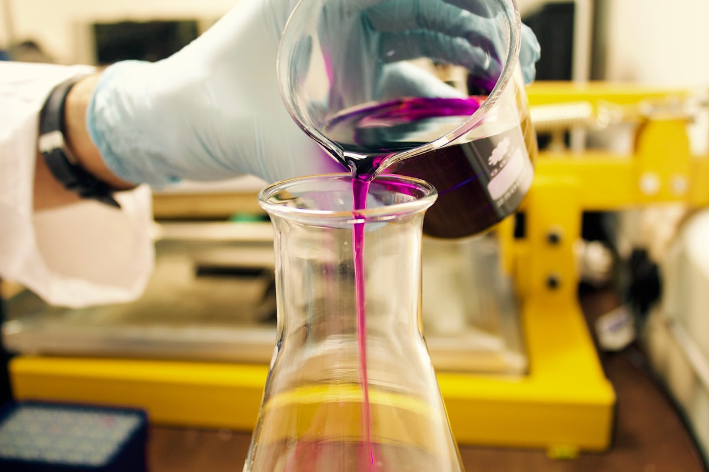

AI-driven discovery from target to lead.
We provide modular, cloud-enabled computational drug design solutions. Our approach integrates structure-based design, high-throughput virtual screening, machine learning predictive profiling, and molecular dynamics to fast-track novel therapeutics.

Laying the foundation for smarter drug discovery.
Our framework integrates multi-omics (genomics, transcriptomics, proteomics), structural bioinformatics, and literature NLP to identify and validate high-confidence disease targets.
Identify high-potential chemical entities at scale.
Screen millions of compounds via structure-based and ligand-based filters against GPCRs, kinases, and enzymes.
Refine hit compounds into selective, drug-like leads.
Improve target selectivity, binding affinity, and metabolic stability while minimizing off-target toxicity.
Generative AI molecules designed for novel targets.
Explore uncharted chemical space. Generate novel molecular scaffolds from scratch, optimized for specific target configurations.
Systems-level drug design for complex diseases.
Model drug effects across multiple network pathways to address complex diseases like cancer, neurodegeneration, and autoimmune disorders.
Validated computational platforms.
Supporting discovery across high-impact disease areas.
Accelerate therapeutic discovery with RASA.
Get in touch with our Pune-based computational drug design experts to coordinate target screens or dynamics calculations.
Start a Project